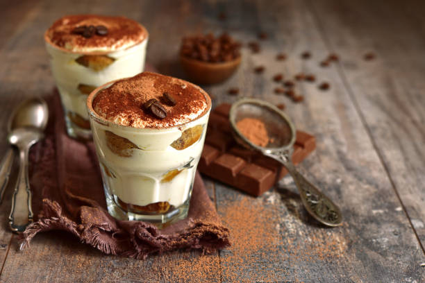

Bahan:
- Sponge cake, siap pakai secukupnya
- 1 sachet kopi instan, seduh
- 200 gr whipped cream
- 200 gr cream cheese
- 2 sdm gula pasir
Topping:
Cara Membuat:
- Potong-potong sponge cake jadi beberapa lapis, sisihkan.
- Campurkan cream cheese dengan gula pasir hingga lembut. Masukkan whipped cream dan aduk
rata.
- Siapkan wadah, letakkan satu lapis sponge cake, tuang kopi instan, tutup dengan krim,
letakkan lagi sponge cake, kopi dan krim hingga habis. Ulangi langkahnya hingga lapisan
terakhir. Ratakan krim bagian paling atas.
- Simpan di dalam kulkas elama kurang lebih 4 jam.
- Ambil bubuk coklat secukupnya. Bubuhkan dengan saringan di atas adonan krim hingga
tertutup merata.
|